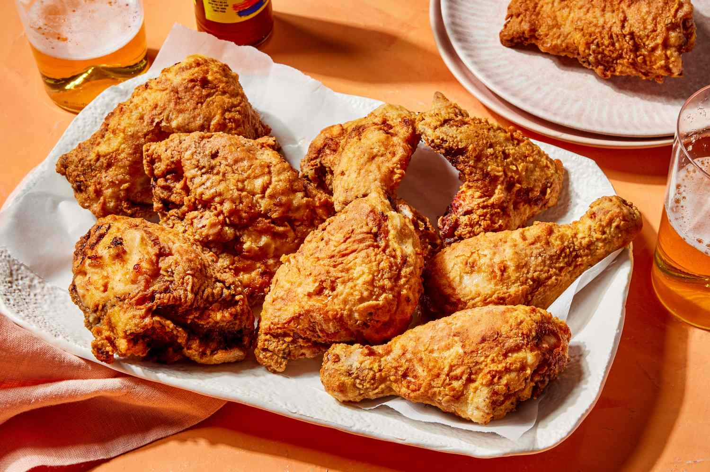
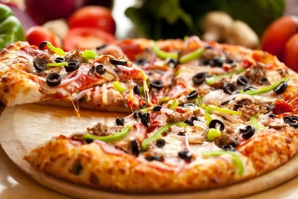

Fried Chicken

What You Need
- 1 kg chicken pieces
- 2 cups buttermilk
- 2 cups all-purpose flour
- 1 tsp paprika
- 1 tsp garlic powder
- 1 tsp salt
- 1/2 tsp black pepper
- Oil for frying
How to Do It
- Marinate the chicken in buttermilk for at least 1 hour, preferably overnight.
- In a bowl, mix flour, paprika, garlic powder, salt, and black pepper.
- Heat oil in a deep frying pan over medium-high heat.
- Remove chicken from buttermilk and dredge each piece in the flour mixture, coating evenly.
- Fry chicken in batches until golden brown and cooked through, about 12-15 minutes per batch.
- Drain on paper towels and serve hot.
Pizza

What You Need
- 1 pizza base
- 1/2 cup pizza sauce
- 1 cup shredded mozzarella cheese
- Your choice of toppings (pepperoni, bell peppers, onions, olives, etc.)
- 1 tsp olive oil
- 1/2 tsp dried oregano
How to Do It
- Preheat your oven to 220°C (430°F).
- Place the pizza base on a baking tray or pizza stone.
- Spread pizza sauce evenly over the base.
- Sprinkle mozzarella cheese over the sauce.
- Add your desired toppings.
- Drizzle olive oil over the pizza and sprinkle with dried oregano.
- Bake in the preheated oven for 10-12 minutes, or until the crust is golden and the cheese is bubbly.
- Remove from the oven, slice, and serve hot.